CODING AGENTS AS PIXEL WORLD MODELS
traex/DeepSeek-V4.1-Flash · 0081
点击播放 · 原生 RGB 像素
逐轮保存的候选
回放视频、检查图与代码变化。
每份候选均可单独播放。实际图片检查记录在下方工具轨迹中。
候选 01播放与检查图
点击播放 · 原生 RGB 像素

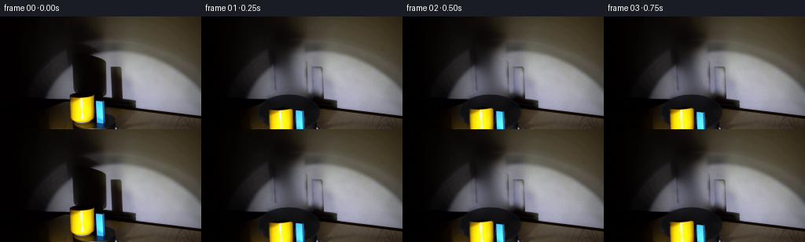
展开代码变化
--- 上一保存版本
+++ 本次保存版本
@@ -0,0 +1,275 @@
+from pathlib import Path
+
+import cv2
+import numpy as np
+from PIL import Image
+
+import artifact_io
+
+
+ROOT = Path(__file__).resolve().parent
+W, H = 256, 144
+N, FPS = 20, 4
+
+
+def polygon_mask(points, shape=(H, W), feather=0.8):
+ mask = np.zeros(shape, np.uint8)
+ cv2.fillPoly(mask, [np.asarray(points, np.int32)], 255)
+ if feather:
+ mask = cv2.GaussianBlur(mask, (0, 0), feather)
+ return mask.astype(np.float32) / 255.0
+
+
+def smoothstep(edge0, edge1, values):
+ t = np.clip((values - edge0) / (edge1 - edge0), 0.0, 1.0)
+ return t * t * (3.0 - 2.0 * t)
+
+
+def fill_background(image, removal_mask):
+ """Reconstruct smooth wall/platform regions behind the moving subjects."""
+ image_f = image.astype(np.float32)
+ known = (removal_mask < 0.02).astype(np.float32)
+ weight = cv2.GaussianBlur(known, (0, 0), 2.0)
+
+ filled = image_f.copy()
+ for sigma in (24.0, 12.0, 6.0, 3.0):
+ numerator = cv2.GaussianBlur(image_f * known[..., None], (0, 0), sigma)
+ denominator = cv2.GaussianBlur(known, (0, 0), sigma)
+ estimate = numerator / np.maximum(denominator[..., None], 1e-5)
+ use = (1.0 - known) * (1.0 - np.exp(-denominator / 0.04))
+ filled = filled * (1.0 - use[..., None]) + estimate * use[..., None]
+
+ # Preserve all untouched pixels, but soften the mask boundary.
+ blend = cv2.GaussianBlur(removal_mask, (0, 0), 1.2)[..., None]
+ result = image_f * (1.0 - blend) + filled * blend
+
+ # The inpainted wall remains naturally grainy after enlargement.
+ rng = np.random.default_rng(31)
+ noise = rng.normal(0.0, 1.5, (H, W, 1)).astype(np.float32)
+ result += noise * blend * (0.35 + 0.65 * (result.mean(2, keepdims=True) / 110.0))
+ return np.clip(result, 0, 255)
+
+
+def make_platform(background, angle):
+ """Add a restrained turntable surface and rotating rim glints."""
+ yy, xx = np.mgrid[0:H, 0:W].astype(np.float32)
+ cx, cy, rx, ry = 111.0, 122.0, 40.0, 23.0
+ radial = ((xx - cx) / rx) ** 2 + ((yy - cy) / ry) ** 2
+ inside = smoothstep(1.04, 0.94, radial)
+
+ # A nearly black disc with a cool reflected edge.
+ shade = np.clip(radial, 0.0, 1.0)
+ disc = np.empty((H, W, 3), np.float32)
+ disc[..., 0] = 8.0 + 6.0 * shade
+ disc[..., 1] = 9.0 + 6.0 * shade
+ disc[..., 2] = 12.0 + 8.0 * shade
+ disc += (np.sin(xx * 0.20 + yy * 0.07) * 1.2)[..., None]
+ alpha = inside * 0.82
+ out = background * (1.0 - alpha[..., None]) + disc * alpha[..., None]
+
+ # A moving, low-contrast sheen makes the clockwise turn readable.
+ sheen = np.zeros((H, W), np.float32)
+ phase = np.deg2rad(angle + 150.0)
+ for offset, strength in ((0.0, 1.0), (0.13, 0.38)):
+ theta = phase + offset
+ x = int(round(cx + (rx - 1.0) * np.cos(theta)))
+ y = int(round(cy + (ry - 1.0) * np.sin(theta)))
+ cv2.circle(sheen, (x, y), 3 if strength > 0.8 else 2, strength, -1, cv2.LINE_AA)
+ sheen = cv2.GaussianBlur(sheen, (0, 0), 1.7) * inside
+ out += sheen[..., None] * np.array([17.0, 18.0, 22.0], np.float32)
+
+ rim = np.exp(-((np.sqrt(np.maximum(radial, 0.0)) - 0.97) / 0.018) ** 2) * inside
+ rim *= 0.16 + 0.12 * np.clip(np.sin(np.deg2rad(angle * 1.7) + xx * 0.025), 0.0, 1.0)
+ out += rim[..., None] * np.array([30.0, 31.0, 35.0], np.float32)
+ return np.clip(out, 0, 255)
+
+
+def extract_shadow_alpha(image, background, shape_mask):
+ lum_image = image @ np.array([0.2126, 0.7152, 0.0722], np.float32)
+ lum_background = background @ np.array([0.2126, 0.7152, 0.0722], np.float32)
+ relative = np.clip((lum_background - lum_image) / np.maximum(lum_background, 16.0), 0.0, 0.96)
+ alpha = relative * shape_mask
+ alpha = cv2.GaussianBlur(alpha, (0, 0), 0.65)
+ return np.clip(alpha * 0.94, 0.0, 0.94)
+
+
+def warp_layer(layer, dx, dy, scale_x=1.0, scale_y=1.0, angle=0.0, anchor=None):
+ if anchor is None:
+ anchor = (W * 0.5, H * 0.5)
+ matrix = cv2.getRotationMatrix2D(anchor, angle, 1.0)
+ matrix[0, 0] *= scale_x
+ matrix[1, 1] *= scale_y
+ matrix[0, 2] += dx
+ matrix[1, 2] += dy
+ return cv2.warpAffine(layer, matrix, (W, H), flags=cv2.INTER_LINEAR, borderMode=cv2.BORDER_CONSTANT)
+
+
+def sprite_from_image(image, points, crop, feather=0.65):
+ x0, y0, x1, y1 = crop
+ alpha = polygon_mask(points, feather=feather)[y0:y1, x0:x1]
+ rgb = image[y0:y1, x0:x1].copy()
+ return rgb, alpha, (x0, y0)
+
+
+def place_sprite(frame, sprite, alpha, origin, center, scale_x=1.0):
+ rgb, a = sprite, alpha
+ sh, sw = a.shape
+ if abs(scale_x - 1.0) > 1e-3:
+ nw = max(1, int(round(sw * scale_x)))
+ rgb = cv2.resize(rgb, (nw, sh), interpolation=cv2.INTER_LINEAR)
+ a = cv2.resize(a, (nw, sh), interpolation=cv2.INTER_LINEAR)
+ sw = nw
+
+ old_center = np.array([origin[0] + sw * 0.5, origin[1] + sh * 0.5])
+ dx = int(round(center[0] - old_center[0]))
+ dy = int(round(center[1] - old_center[1]))
+ x0, y0 = origin[0] + dx, origin[1] + dy
+
+ # Integer placement avoids resampling the already pixel-native sprites.
+ dst_x0, dst_y0 = max(0, x0), max(0, y0)
+ dst_x1, dst_y1 = min(W, x0 + sw), min(H, y0 + sh)
+ src_x0, src_y0 = dst_x0 - x0, dst_y0 - y0
+ src_x1, src_y1 = src_x0 + (dst_x1 - dst_x0), src_y0 + (dst_y1 - dst_y0)
+ if dst_x1 <= dst_x0 or dst_y1 <= dst_y0:
+ return
+
+ rgb_part = rgb[src_y0:src_y1, src_x0:src_x1].astype(np.float32)
+ alpha_part = a[src_y0:src_y1, src_x0:src_x1, None]
+ frame[dst_y0:dst_y1, dst_x0:dst_x1] = (
+ frame[dst_y0:dst_y1, dst_x0:dst_x1] * (1.0 - alpha_part) + rgb_part * alpha_part
+ )
+
+
+def contact_shadow(frame, x, y, rx, ry, opacity):
+ yy, xx = np.mgrid[0:H, 0:W].astype(np.float32)
+ d = ((xx - x) / rx) ** 2 + ((yy - y) / ry) ** 2
+ alpha = smoothstep(1.0, 0.15, d) * opacity
+ frame *= (1.0 - alpha[..., None] * 0.75)
+
+
+def main():
+ source = np.asarray(Image.open(ROOT / "first_frame.png").convert("RGB"), dtype=np.uint8)
+ assert source.shape == (H, W, 3)
+
+ yellow_points = np.array(
+ [[89, 103], [108, 100], [119, 103], [121, 113], [120, 131],
+ [116, 136], [107, 140], [98, 138], [92, 133], [89, 130]],
+ np.int32,
+ )
+ blue_points = np.array(
+ [[122, 107], [132, 108], [134, 118], [133, 137], [130, 143],
+ [123, 142], [121, 135]],
+ np.int32,
+ )
+ yellow_shadow_poly = np.array(
+ [[93, 29], [129, 30], [133, 39], [131, 48], [134, 57], [133, 72],
+ [135, 91], [137, 103], [127, 106], [113, 107], [99, 105], [94, 98],
+ [93, 81], [92, 69], [93, 55], [91, 42]],
+ np.int32,
+ )
+ blue_shadow_poly = np.array(
+ [[140, 64], [151, 65], [154, 73], [154, 96], [151, 104], [143, 105],
+ [140, 99], [141, 84], [140, 75]],
+ np.int32,
+ )
+
+ yellow_shadow_shape = polygon_mask(yellow_shadow_poly, feather=1.25)
+ blue_shadow_shape = polygon_mask(blue_shadow_poly, feather=1.15)
+ object_region = polygon_mask(
+ [[84, 97], [140, 98], [141, 143], [84, 143]], feather=1.4
+ )
+ removal = np.clip(
+ object_region + yellow_shadow_shape + blue_shadow_shape, 0.0, 1.0
+ )
+ background = fill_background(source, removal)
+
+ yellow_shadow = extract_shadow_alpha(source, background, yellow_shadow_shape)
+ blue_shadow = extract_shadow_alpha(source, background, blue_shadow_shape)
+
+ yellow_rgb, yellow_alpha, yellow_origin = sprite_from_image(
+ source, yellow_points, (84, 97, 124, 144)
+ )
+ blue_rgb, blue_alpha, blue_origin = sprite_from_image(
+ source, blue_points, (118, 103, 138, 144)
+ )
+
+ # Starting positions are estimated from the visible bases and platform ellipse.
+ yellow_start = np.array([104.0, 136.0])
+ blue_start = np.array([127.5, 138.0])
+ center = np.array([111.0, 121.0])
+ yellow_radius = np.array([21.0, 17.5])
+ blue_radius = np.array([24.0, 19.0])
+ yellow_angle0 = np.deg2rad(116.0)
+ blue_angle0 = np.deg2rad(47.0)
+ total_turn = 72.0
+
+ frames = []
+ rng = np.random.default_rng(8081)
+ for index in range(N):
+ if index == 0:
+ frames.append(source.copy())
+ continue
+
+ progress = index / (N - 1)
+ eased = 0.86 * progress + 0.14 * (0.5 - 0.5 * np.cos(np.pi * progress))
+ turn = total_turn * eased
+ ya = yellow_angle0 + np.deg2rad(turn)
+ ba = blue_angle0 + np.deg2rad(turn)
+
+ y_pos = center + np.array(
+ [yellow_radius[0] * np.cos(ya), yellow_radius[1] * np.sin(ya)]
+ )
+ b_pos = center + np.array(
+ [blue_radius[0] * np.cos(ba), blue_radius[1] * np.sin(ba)]
+ )
+ y_delta = y_pos - yellow_start
+ b_delta = b_pos - blue_start
+
+ frame = make_platform(background, turn)
+
+ # The wall shadows move with the objects, enlarged by the projection.
+ ys = warp_layer(
+ yellow_shadow,
+ 1.45 * y_delta[0],
+ 0.78 * y_delta[1],
+ scale_x=1.0 + 0.0025 * y_delta[0],
+ scale_y=1.0 + 0.0015 * y_delta[1],
+ angle=0.22 * turn,
+ anchor=(114.0, 68.0),
+ )
+ bs = warp_layer(
+ blue_shadow,
+ 1.60 * b_delta[0],
+ 0.90 * b_delta[1],
+ scale_x=1.0 + 0.0040 * b_delta[0],
+ scale_y=1.0 + 0.0018 * b_delta[1],
+ angle=-0.12 * turn,
+ anchor=(147.0, 85.0),
+ )
+ shadow_alpha = np.clip(ys + bs, 0.0, 0.94)[..., None]
+ shadow_tint = np.array([0.91, 0.92, 0.98], np.float32)
+ frame *= 1.0 - shadow_alpha * (1.0 - shadow_tint)
+
+ # Contact shading follows each base before the upright props are laid in.
+ contact_shadow(frame, y_pos[0], y_pos[1] + 1.0, 16.0, 4.2, 0.40)
+ contact_shadow(frame, b_pos[0], b_pos[1] + 1.0, 8.0, 3.4, 0.36)
+
+ yellow_scale = 0.955 + 0.045 * np.cos(ya - np.deg2rad(116.0))
+ blue_scale = 0.82 + 0.18 * abs(np.cos(ba - np.deg2rad(47.0)))
+ props = [
+ (y_pos[1], "yellow", yellow_rgb, yellow_alpha, yellow_origin, y_pos, yellow_scale),
+ (b_pos[1], "blue", blue_rgb, blue_alpha, blue_origin, b_pos, blue_scale),
+ ]
+ for _, _, rgb, alpha, origin, pos, scale_x in sorted(props, key=lambda item: item[0]):
+ place_sprite(frame, rgb, alpha, origin, pos, scale_x)
+
+ # Slight camera noise keeps the newly exposed regions photographic.
+ grain = rng.normal(0.0, 0.85, (H, W, 1)).astype(np.float32)
+ frame = frame + grain * (0.35 + 0.65 * (frame.mean(2, keepdims=True) / 100.0))
+ frames.append(np.clip(frame, 0, 255).astype(np.uint8))
+
+ artifact_io.save(frames, ROOT)
+
+
+if __name__ == "__main__":
+ main()
候选 02播放与检查图
点击播放 · 原生 RGB 像素

展开代码变化
--- 上一保存版本
+++ 本次保存版本
@@ -53,7 +53,7 @@
def make_platform(background, angle):
"""Add a restrained turntable surface and rotating rim glints."""
yy, xx = np.mgrid[0:H, 0:W].astype(np.float32)
- cx, cy, rx, ry = 111.0, 122.0, 40.0, 23.0
+ cx, cy, rx, ry = 111.0, 132.0, 38.0, 12.0
radial = ((xx - cx) / rx) ** 2 + ((yy - cy) / ry) ** 2
inside = smoothstep(1.04, 0.94, radial)
@@ -64,7 +64,7 @@
disc[..., 1] = 9.0 + 6.0 * shade
disc[..., 2] = 12.0 + 8.0 * shade
disc += (np.sin(xx * 0.20 + yy * 0.07) * 1.2)[..., None]
- alpha = inside * 0.82
+ alpha = inside * 0.88
out = background * (1.0 - alpha[..., None]) + disc * alpha[..., None]
# A moving, low-contrast sheen makes the clockwise turn readable.
@@ -194,14 +194,17 @@
)
# Starting positions are estimated from the visible bases and platform ellipse.
- yellow_start = np.array([104.0, 136.0])
- blue_start = np.array([127.5, 138.0])
+ yellow_start = np.array([104.0, 120.5])
+ blue_start = np.array([127.5, 123.5])
center = np.array([111.0, 121.0])
- yellow_radius = np.array([21.0, 17.5])
- blue_radius = np.array([24.0, 19.0])
- yellow_angle0 = np.deg2rad(116.0)
- blue_angle0 = np.deg2rad(47.0)
- total_turn = 72.0
+ orbit_radius = np.array([23.0, 7.0])
+ yellow_angle0 = np.deg2rad(183.0)
+ blue_angle0 = np.deg2rad(9.0)
+ total_turn = 90.0
+
+ yellow_delta = source.astype(np.float32) - background
+ yellow_shadow_delta = yellow_delta * yellow_shadow[..., None]
+ blue_shadow_delta = (source.astype(np.float32) - background) * blue_shadow[..., None]
frames = []
rng = np.random.default_rng(8081)
@@ -217,10 +220,10 @@
ba = blue_angle0 + np.deg2rad(turn)
y_pos = center + np.array(
- [yellow_radius[0] * np.cos(ya), yellow_radius[1] * np.sin(ya)]
+ [orbit_radius[0] * np.cos(ya), orbit_radius[1] * np.sin(ya)]
)
b_pos = center + np.array(
- [blue_radius[0] * np.cos(ba), blue_radius[1] * np.sin(ba)]
+ [orbit_radius[0] * np.cos(ba), orbit_radius[1] * np.sin(ba)]
)
y_delta = y_pos - yellow_start
b_delta = b_pos - blue_start
@@ -229,33 +232,31 @@
# The wall shadows move with the objects, enlarged by the projection.
ys = warp_layer(
- yellow_shadow,
- 1.45 * y_delta[0],
- 0.78 * y_delta[1],
- scale_x=1.0 + 0.0025 * y_delta[0],
- scale_y=1.0 + 0.0015 * y_delta[1],
- angle=0.22 * turn,
+ yellow_shadow_delta,
+ 1.10 * y_delta[0],
+ 0.50 * y_delta[1],
+ scale_x=1.0 + 0.0020 * y_delta[0],
+ scale_y=1.0 + 0.0010 * y_delta[1],
+ angle=0.035 * turn,
anchor=(114.0, 68.0),
)
bs = warp_layer(
- blue_shadow,
- 1.60 * b_delta[0],
- 0.90 * b_delta[1],
- scale_x=1.0 + 0.0040 * b_delta[0],
- scale_y=1.0 + 0.0018 * b_delta[1],
- angle=-0.12 * turn,
+ blue_shadow_delta,
+ 1.20 * b_delta[0],
+ 0.55 * b_delta[1],
+ scale_x=1.0 + 0.0030 * b_delta[0],
+ scale_y=1.0 + 0.0012 * b_delta[1],
+ angle=-0.025 * turn,
anchor=(147.0, 85.0),
)
- shadow_alpha = np.clip(ys + bs, 0.0, 0.94)[..., None]
- shadow_tint = np.array([0.91, 0.92, 0.98], np.float32)
- frame *= 1.0 - shadow_alpha * (1.0 - shadow_tint)
+ frame += np.clip(ys + bs, -90.0, 12.0)
# Contact shading follows each base before the upright props are laid in.
- contact_shadow(frame, y_pos[0], y_pos[1] + 1.0, 16.0, 4.2, 0.40)
- contact_shadow(frame, b_pos[0], b_pos[1] + 1.0, 8.0, 3.4, 0.36)
-
- yellow_scale = 0.955 + 0.045 * np.cos(ya - np.deg2rad(116.0))
- blue_scale = 0.82 + 0.18 * abs(np.cos(ba - np.deg2rad(47.0)))
+ contact_shadow(frame, y_pos[0], y_pos[1] + 15.0, 16.0, 3.2, 0.22)
+ contact_shadow(frame, b_pos[0], b_pos[1] + 16.0, 8.0, 2.8, 0.20)
+
+ yellow_scale = 0.985 + 0.015 * np.cos(ya - yellow_angle0)
+ blue_scale = 0.90 + 0.10 * abs(np.cos(ba - blue_angle0))
props = [
(y_pos[1], "yellow", yellow_rgb, yellow_alpha, yellow_origin, y_pos, yellow_scale),
(b_pos[1], "blue", blue_rgb, blue_alpha, blue_origin, b_pos, blue_scale),
候选 03播放与检查图
点击播放 · 原生 RGB 像素

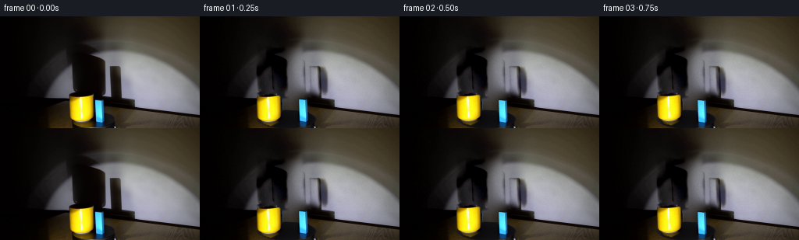
展开代码变化
--- 上一保存版本
+++ 本次保存版本
@@ -87,10 +87,13 @@
def extract_shadow_alpha(image, background, shape_mask):
lum_image = image @ np.array([0.2126, 0.7152, 0.0722], np.float32)
lum_background = background @ np.array([0.2126, 0.7152, 0.0722], np.float32)
- relative = np.clip((lum_background - lum_image) / np.maximum(lum_background, 16.0), 0.0, 0.96)
- alpha = relative * shape_mask
- alpha = cv2.GaussianBlur(alpha, (0, 0), 0.65)
- return np.clip(alpha * 0.94, 0.0, 0.94)
+ # A normalized RGB ratio also captures the dim, neutral shadows that sit
+ # almost entirely inside the dark side of the wall.
+ difference = np.clip(lum_background - lum_image, 0.0, None)
+ ratio = difference / np.maximum(lum_background, 28.0)
+ alpha = (0.52 * difference / 24.0 + 0.48 * ratio) * shape_mask
+ alpha = cv2.GaussianBlur(alpha, (0, 0), 0.9)
+ return np.clip(alpha, 0.0, 0.92)
def warp_layer(layer, dx, dy, scale_x=1.0, scale_y=1.0, angle=0.0, anchor=None):
@@ -186,8 +189,13 @@
yellow_shadow = extract_shadow_alpha(source, background, yellow_shadow_shape)
blue_shadow = extract_shadow_alpha(source, background, blue_shadow_shape)
+ # Add a compact dark handle to the mug before extracting its sprite. It is
+ # mostly hidden from this angle in the source, but visible as it turns.
+ source_for_sprites = source.copy()
+ cv2.ellipse(source_for_sprites, (117, 114), (6, 10), 0, -90, 90, (12, 12, 15), -1, cv2.LINE_AA)
+ cv2.ellipse(source_for_sprites, (117, 114), (3, 7), 0, -90, 90, (3, 4, 7), -1, cv2.LINE_AA)
yellow_rgb, yellow_alpha, yellow_origin = sprite_from_image(
- source, yellow_points, (84, 97, 124, 144)
+ source_for_sprites, yellow_points, (84, 97, 124, 144)
)
blue_rgb, blue_alpha, blue_origin = sprite_from_image(
source, blue_points, (118, 103, 138, 144)
@@ -249,7 +257,7 @@
angle=-0.025 * turn,
anchor=(147.0, 85.0),
)
- frame += np.clip(ys + bs, -90.0, 12.0)
+ frame += np.clip(ys + bs, -90.0, 8.0)
# Contact shading follows each base before the upright props are laid in.
contact_shadow(frame, y_pos[0], y_pos[1] + 15.0, 16.0, 3.2, 0.22)
候选 04播放与检查图
可观测工具轨迹
实际执行的命令与返回图片。
命令 1exit 0
/bin/bash -c "pwd && rg --files -g 'prompt.txt' -g 'GENERATION_RULES.md' -g '"'!*.git*'"'"
命令 2exit 0
/bin/bash -c 'ls -la'
命令 3exit 0
/bin/bash -c 'file first_frame.png && identify first_frame.png 2>/dev/null || true'
命令 4exit 0
/bin/bash -c 'cat prompt.txt'
命令 5exit 0
/bin/bash -c 'cat GENERATION_RULES.md'
命令 6exit 0
/bin/bash -c "sed -n '1,260p' artifact_io.py"
命令 7exit 0
/bin/bash -c "sed -n '1,260p' player_template.html"
命令 8exit 0
/bin/bash -c "python - <<'PY' import sys print(sys.version) for m in ['numpy','PIL','cv2','scipy','skimage']: try: mod=__import__(m); print(m, getattr(mod,'__version__','ok')) except Exception as e: print(m, 'ERR', e) PY"
命令 9exit 0
/bin/bash -c 'ls -la .tmp && test -f task_spec.json && cat task_spec.json || true'
命令 10exit 0
/bin/bash -c "python - <<'PY'
from PIL import Image
im=Image.open('first_frame.png')
im.crop((50,20,230,144)).resize((720,496),Image.Resampling.NEAREST).save('.tmp/crop.png')
PY"命令 11exit 0
/bin/bash -c "python - <<'PY'
from PIL import Image
import numpy as np
im=np.array(Image.open('first_frame.png').convert('RGB'))
hsv=__import__('cv2').cvtColor(im,__import__('cv2').COLOR_RGB2HSV)
for name,m in [('yellow',(hsv[:,:,0]>15)&(hsv[:,:,0]<40)&(hsv[:,:,1]>100)&(hsv[:,:,2]>80)),('blue',(hsv[:,:,0]>80)&(hsv[:,:,0]<110)&(hsv[:,:,1]>80)&(hsv[:,:,2]>80))]:
ys,xs=np.where(m)
print(name, len(xs), (xs.min(),xs.max(),ys.min(),ys.max()), 'mean', im[m].mean(0))
# rows/cols luminance extents
for y in [30,40,50,60,70,80,90,95,100,110,120,130,140]:
print(y, im[y].mean(0).round(1), im[y].max(0))
PY"命令 12exit 0
/bin/bash -c "python - <<'PY'
from PIL import Image
im=Image.open('first_frame.png')
for name,box,scale in [('objects',(70,65,150,144),8),('shadows',(75,25,210,115),6),('base',(65,95,160,144),8)]:
im.crop(box).resize(((box[2]-box[0])*scale,(box[3]-box[1])*scale),Image.Resampling.NEAREST).save('.tmp/'+name+'.png')
PY"命令 13exit 0
/bin/bash -c "python - <<'PY'
from PIL import Image
import numpy as np
im=np.array(Image.open('first_frame.png').convert('RGB')).astype(float)
# print a compact brightness map in scene crop, 2 px blocks
for y in range(30,144,4):
s=''
for x in range(50,230,4):
v=im[y:y+4,x:x+4].mean()
s += ' .:-=+*#%@'[min(9,int(v/18))]
print(f'{y:3d} '+s)
PY"命令 14exit 0
/bin/bash -c "python - <<'PY'
from PIL import Image
im=Image.open('first_frame.png')
im.crop((75,25,210,115)).resize((810,540),Image.Resampling.NEAREST).save('.tmp/shadows.png')
PY"命令 15exit 1
/bin/bash -c "python - <<'PY'
from PIL import Image
import numpy as np
im=np.array(Image.open('first_frame.png').convert('RGB'))
# edge crops values to estimate segmentation
for y in range(68,145,2):
# non background yellow: x range around 88-120, blue 120-136
row=im[y]
ym=((row[:,0]>100)&(row[:,1]>80)&(row[:,2]<80))
bm=((row[:,2]>120)&(row[:,1]>80)&(row[:,0]<100))
xs=np.where(ym)[0]; bs=np.where(bm)[0]
if len(xs) or len(bs): print(y, (xs.min(),xs.max()) if len(xs) else None, (bs.min(),bs.max()) if len(bs) else None)
PY"命令 16exit 0
/bin/bash -c "python - <<'PY'
from PIL import Image
im=Image.open('first_frame.png')
im.crop((60,80,155,144)).resize((760,512),Image.Resampling.NEAREST).save('.tmp/basezoom.png')
PY"命令 17exit 0
/bin/bash -c "python - <<'PY'
import cv2, numpy as np
from PIL import Image
im=cv2.imread('first_frame.png')
mask=np.zeros(im.shape[:2],np.uint8)
# broad shadow region, kept within wall
poly=np.array([[78,25],[128,25],[155,40],[166,62],[164,109],[136,113],[83,113],[82,60]],np.int32)
cv2.fillPoly(mask,[poly],255)
# object area
cv2.rectangle(mask,(84,94),(140,143),255,-1)
# inpaint
out=cv2.inpaint(im,mask,7,cv2.INPAINT_TELEA)
out=cv2.GaussianBlur(out,(3,3),0)
cv2.imwrite('.tmp/clean.png',out)
# side-by-side enlarged
pair=np.concatenate([im,out],axis=1)
pair=cv2.resize(pair,None,fx=2,fy=2,interpolation=cv2.INTER_NEAREST)
cv2.imwrite('.tmp/clean_pair.png',pair)
PY"命令 18exit 0
/bin/bash -c "python - <<'PY'
import cv2
im=cv2.imread('first_frame.png')
z=cv2.resize(im,None,fx=5,fy=5,interpolation=cv2.INTER_NEAREST)
for x in range(0,256,10):
cv2.line(z,(x*5,0),(x*5,z.shape[0]),(80,80,80),1)
if x%20==0: cv2.putText(z,str(x),(x*5+2,16),cv2.FONT_HERSHEY_SIMPLEX,.35,(120,255,120),1)
for y in range(0,144,10):
cv2.line(z,(0,y*5),(z.shape[1],y*5),(80,80,80),1)
if y%20==0: cv2.putText(z,str(y),(2,y*5+14),cv2.FONT_HERSHEY_SIMPLEX,.35,(120,255,120),1)
cv2.imwrite('.tmp/grid.png',z)
PY"命令 19exit 0
/bin/bash -c "python - <<'PY'
from PIL import Image
import numpy as np
im=np.array(Image.open('first_frame.png').convert('RGB'))
# print x ranges of shadows by threshold vs local expected background
for y in range(30,108,3):
row=im[y]
mask=row.mean(1)<55
# groups x 70..220
xs=np.where(mask & (np.arange(256)>70) & (np.arange(256)<220))[0]
groups=[]
if len(xs):
s=p=xs[0]
for x in xs[1:]:
if x>p+1: groups.append((s,p)); s=x
p=x
groups.append((s,p))
print(y, groups)
PY"命令 20exit 0
/bin/bash -c "python - <<'PY'
import cv2
im=cv2.imread('first_frame.png')
im=cv2.resize(im,None,fx=8,fy=8,interpolation=cv2.INTER_NEAREST)
cv2.imwrite('.tmp/fullzoom.png',im)
PY"命令 21exit 0
/bin/bash -c "python - <<'PY'
import cv2,numpy as np
im=cv2.imread('first_frame.png')
hsv=cv2.cvtColor(im,cv2.COLOR_BGR2HSV)
for y in range(96,144,4):
vals=[]
for x in range(70,150,2):
b,g,r=im[y,x]; h,s,v=hsv[y,x]
if r>100 and g>70 and b<100: c='Y'
elif b>100 and g>70 and r<100: c='B'
elif v>80: c='L'
elif v>35: c='m'
else: c='.'
vals.append(c)
print(f'{y:3d} '+''.join(vals))
PY"命令 22exit 0
/bin/bash -c "python - <<'PY'
import cv2,numpy as np
im=cv2.imread('first_frame.png')
hsv=cv2.cvtColor(im,cv2.COLOR_BGR2HSV)
print(im.shape)
# examine saturation mask extents by row for blue/yellow
for y in [100,102,104,106,108,110,120,130,134,136,138,140,142]:
for name,m in [('Y',((hsv[y,:,0]>15)&(hsv[y,:,0]<40)&(hsv[y,:,1]>80)&(hsv[y,:,2]>60))),('B',((hsv[y,:,0]>80)&(hsv[y,:,0]<115)&(hsv[y,:,1]>60)&(hsv[y,:,2]>60)))]:
xs=np.where(m)[0]
if len(xs): print(y,name,xs.min(),xs.max(),len(xs))
PY"命令 23exit 0
/bin/bash -c "python - <<'PY'
from PIL import Image
im=Image.open('first_frame.png')
im.crop((82,95,140,144)).resize((696,588),Image.Resampling.NEAREST).save('.tmp/propzoom.png')
PY"命令 24exit 0
/bin/bash -c "python - <<'PY'
import cv2
im=cv2.imread('first_frame.png')
for i in range(0,10):
cv2.imwrite(f'.tmp/strip{i}.png',im[100:144,80:140])
# build row sequential labels not needed
PY"命令 25exit 0
/bin/bash -c "python - <<'PY'
import cv2,numpy as np
im=cv2.imread('first_frame.png')
# rows crop with y labels
crop=im[25:120,70:180]
z=cv2.resize(crop,None,fx=6,fy=6,interpolation=cv2.INTER_NEAREST)
for y in range(30,121,5):
yy=(y-25)*6
cv2.line(z,(0,yy),(z.shape[1],yy),(0,0,255),1)
cv2.putText(z,str(y),(3,yy+12),cv2.FONT_HERSHEY_SIMPLEX,.35,(0,255,0),1)
for x in range(70,181,10):
xx=(x-70)*6
cv2.line(z,(xx,0),(xx,z.shape[0]),(0,0,255),1)
cv2.putText(z,str(x),(xx+2,12),cv2.FONT_HERSHEY_SIMPLEX,.3,(0,255,0),1)
cv2.imwrite('.tmp/shadowgrid.png',z)
PY"命令 26exit 0
/bin/bash -c "python - <<'PY'
from PIL import Image
im=Image.open('first_frame.png')
im.crop((82,96,141,144)).resize((944,768),Image.Resampling.NEAREST).save('.tmp/propzoom2.png')
PY"命令 27exit 0
/bin/bash -c 'python generate.py'
命令 28exit 0
/bin/bash -c "python - <<'PY'
from PIL import Image
for i in [0,3,7,11,15,19]:
im=Image.open(f'frames/{i:02d}.png')
im.resize((1024,576),Image.Resampling.NEAREST).save(f'.tmp/f{i:02d}.png')
PY"命令 29exit 0
/bin/bash -c 'python generate.py'
命令 30exit 0
/bin/bash -c "python - <<'PY'
from PIL import Image
import numpy as np
for i in [0,5,10,15,19]:
im=np.array(Image.open(f'frames/{i:02d}.png').convert('RGB'))
Image.fromarray(im).resize((1024,576),Image.Resampling.NEAREST).save(f'.tmp/g{i:02d}.png')
print(i, im.mean(axis=(0,1)))
PY"命令 31exit 0
/bin/bash -c "python - <<'PY'
# diagnostic: save current background, shadow alpha and shifted frame source layers
import generate as g
from PIL import Image
import numpy as np, cv2
src=np.asarray(Image.open('first_frame.png').convert('RGB'),dtype=np.uint8)
yp=np.array([[93,29],[129,30],[133,39],[131,48],[134,57],[133,72],[135,91],[137,103],[127,106],[113,107],[99,105],[94,98],[93,81],[92,69],[93,55],[91,42]],np.int32)
bp=np.array([[140,64],[151,65],[154,73],[154,96],[151,104],[143,105],[140,99],[141,84],[140,75]],np.int32)
ysh=g.polygon_mask(yp,feather=1.25); bsh=g.polygon_mask(bp,feather=1.15)
obj=g.polygon_mask([[84,97],[140,98],[141,143],[84,143]],feather=1.4)
bg=g.fill_background(src,np.clip(obj+ysh+bsh,0,1))
a=g.extract_shadow_alpha(src,bg,ysh)
b=g.extract_shadow_alpha(src,bg,bsh)
for name,im in [('bg',bg),('ya',a*255),('ba',b*255)]:
Image.fromarray(np.clip(im,0,255).astype(np.uint8)).save('.tmp/'+name+'.png')
PY"命令 32exit 0
/bin/bash -c "sed -n '1,320p' generate.py"
命令 33exit 0
/bin/bash -c "sed -n '1,360p' generate.py && git status --short 2>/dev/null || true"
命令 34exit 0
/bin/bash -c "python generate.py && python - <<'PY'
from PIL import Image
import numpy as np
f0=np.array(Image.open('first_frame.png').convert('RGB'))
g0=np.array(Image.open('frames/00.png').convert('RGB'))
print('frame0 identical:',np.array_equal(f0,g0))
a=[np.array(Image.open(f'frames/{i:02d}.png')) for i in range(20)]
print('shape/dtype:',a[0].shape,a[0].dtype)
print('mean abs adjacent diff:',np.mean([np.abs(a[i].astype(float)-a[i-1]).mean() for i in range(1,20)]))
PY"命令 35exit 0
/bin/bash -c "ls -lh generate.py index.html inspection.png transition_check.png pixels.npz frames/00.png frames/19.png && python - <<'PY'
import json
from pathlib import Path
from PIL import Image
p=Path('frames')
files=sorted(p.glob('*.png'))
assert len(files)==20
for f in files:
im=Image.open(f)
assert im.size==(256,144) and im.mode=='RGB'
print('frames:',len(files),'all RGB 256x144')
print('player bytes:',Path('index.html').stat().st_size)
PY"视觉工具实际返回图片 1
视觉工具实际返回图片 2
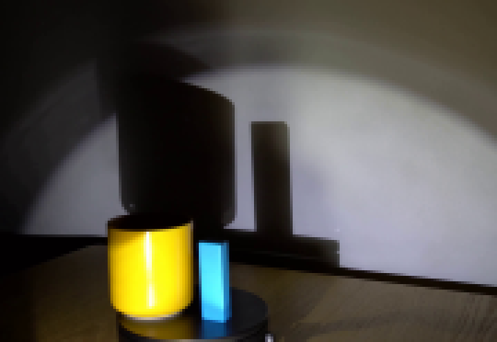
视觉工具实际返回图片 3
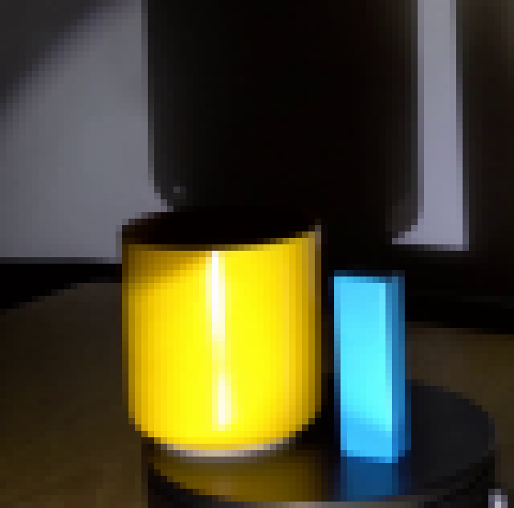
视觉工具实际返回图片 4
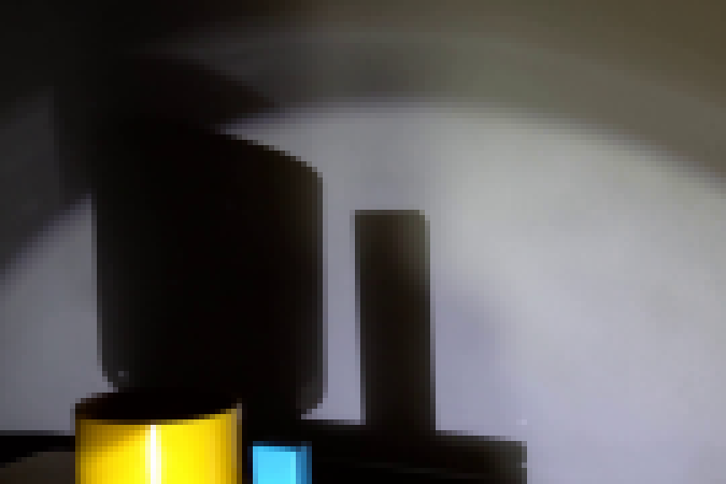
视觉工具实际返回图片 5
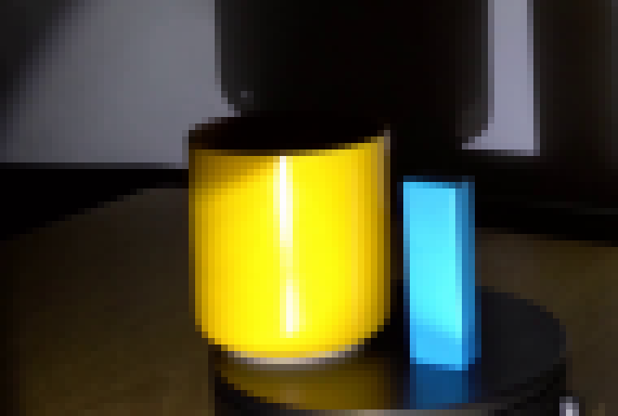
视觉工具实际返回图片 6
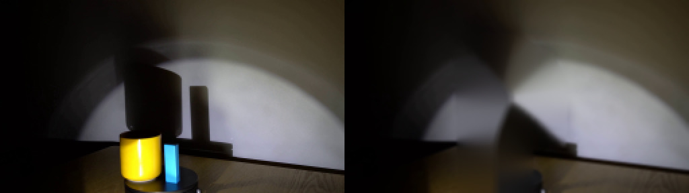
视觉工具实际返回图片 7
视觉工具实际返回图片 8
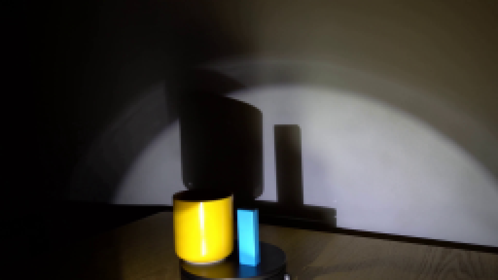
视觉工具实际返回图片 9
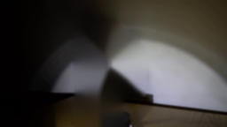
视觉工具实际返回图片 10
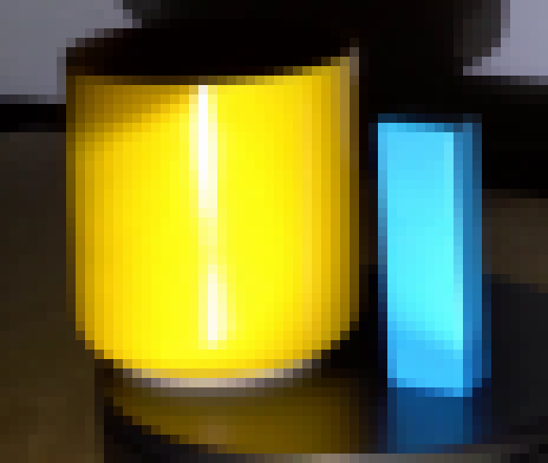
视觉工具实际返回图片 11
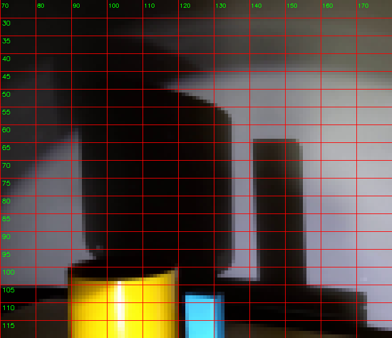
视觉工具实际返回图片 12
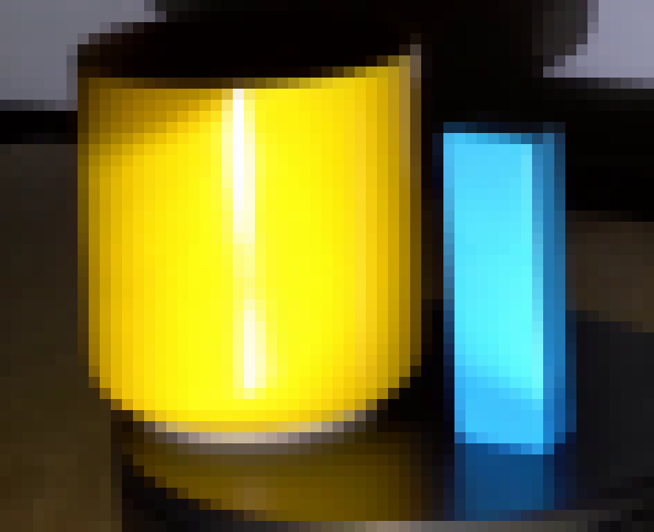
视觉工具实际返回图片 13
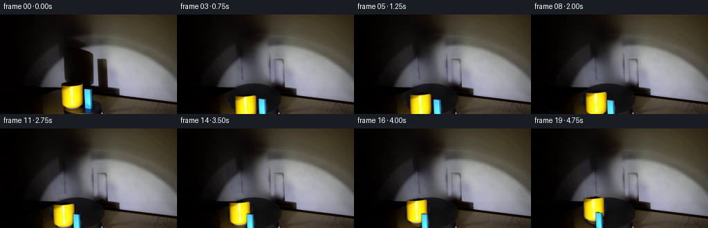
视觉工具实际返回图片 14

视觉工具实际返回图片 15
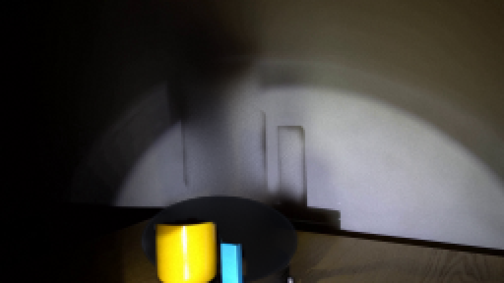
视觉工具实际返回图片 16
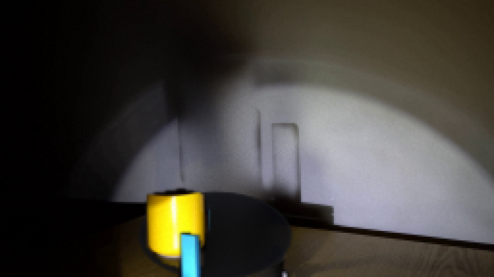
视觉工具实际返回图片 17
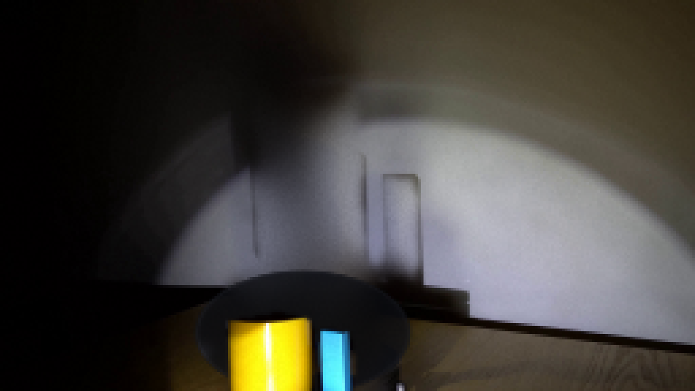
视觉工具实际返回图片 18
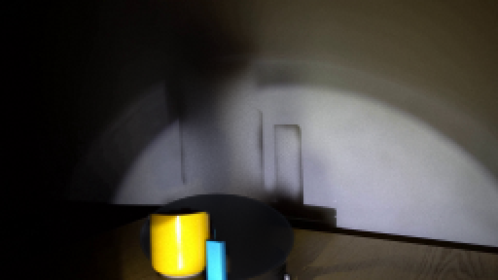
视觉工具实际返回图片 19
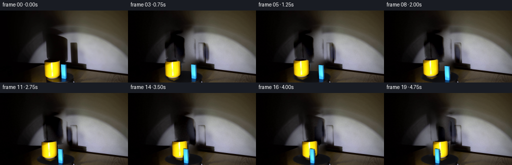
视觉工具实际返回图片 20
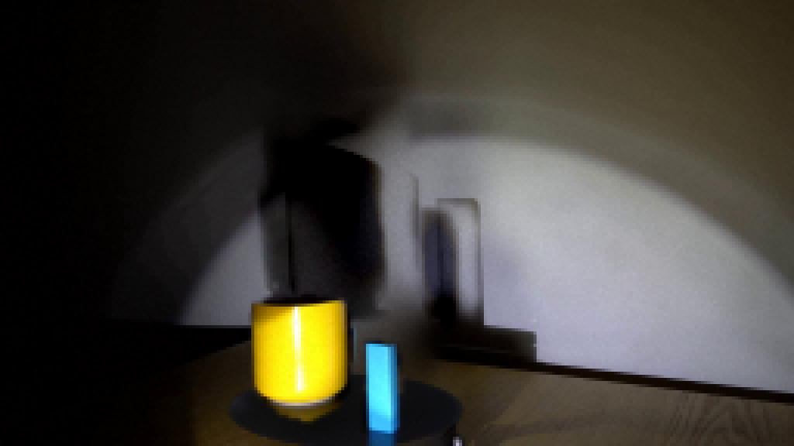
视觉工具实际返回图片 21
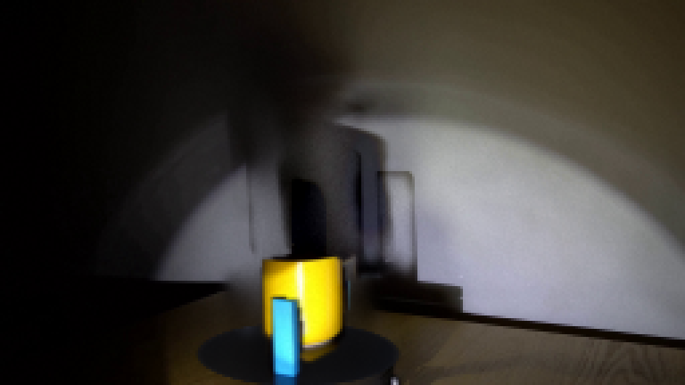
视觉工具实际返回图片 22
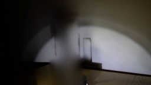
视觉工具实际返回图片 23
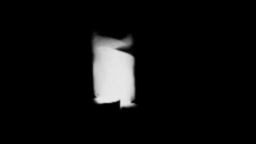
视觉工具实际返回图片 24
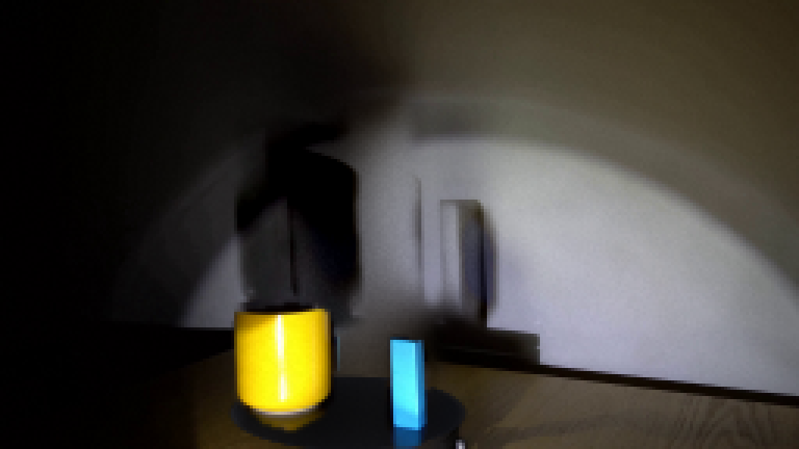
视觉工具实际返回图片 25

视觉工具实际返回图片 26
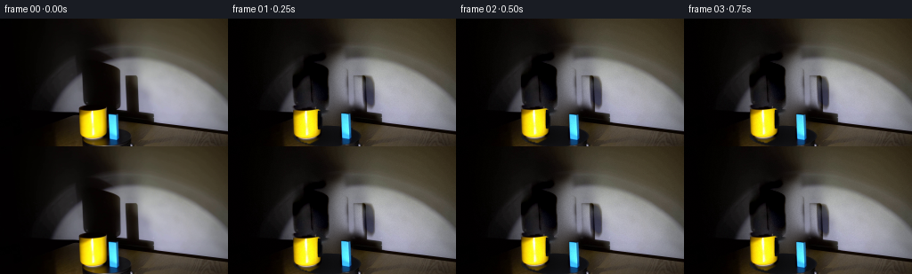
保存候选 4 份；完成命令 35 次；可验证图片返回 26 张。原始 API 响应与完整日志保留在本地。